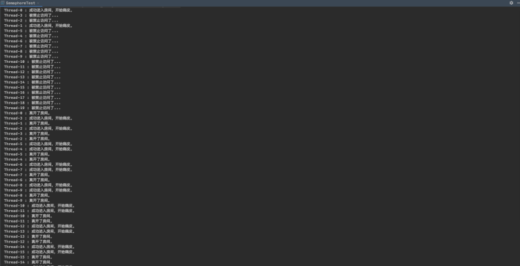

Semaphore
可以理解为一个限流器。个人觉得他能实现的东西，Condition接口也能实现，不过condition接口的实现没如此灵活。
使用方法如下：
public class SemaphoreTest {
Semaphore semaphore = new Semaphore(2);
public static void main(String[] args) {
SemaphoreTest semaphoreTest = new SemaphoreTest();
for (int i = 0; i < 20; i++) {
new Thread(() -> {
try {
semaphoreTest.enterRoom();
} catch (InterruptedException e) {
e.printStackTrace();
}
}, "Thread-" + i).start();
}
}
public void enterRoom() throws InterruptedException {
if (semaphore.availablePermits() == 0) {
System.out.println(Thread.currentThread().getName() + " : " + "被禁止访问了...");
}
semaphore.acquire();
System.out.println(Thread.currentThread().getName() + " : " + "成功进入房间，开始嗨皮。");
Thread.sleep(1000);
System.out.println(Thread.currentThread().getName() + " : " + "离开了房间。");
semaphore.release();
}
}
